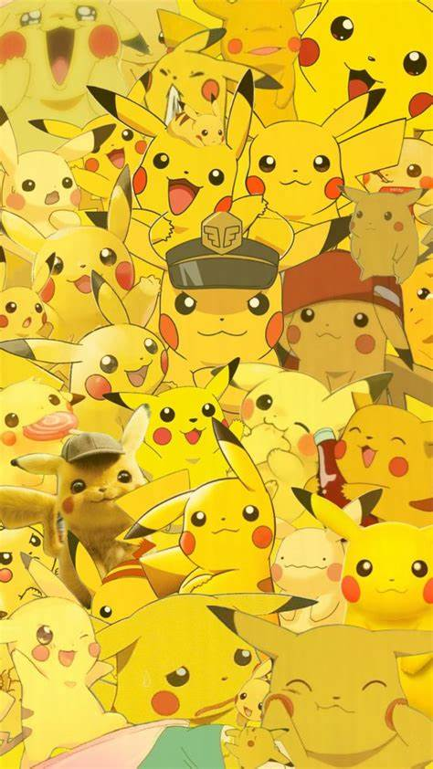
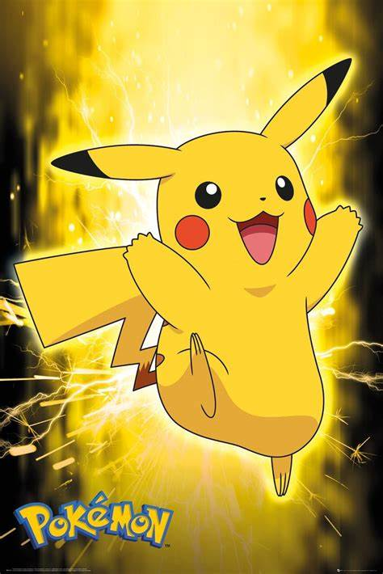

Pikachu's Biology
A female Pikachu looks almost exactly the same as a male, with the exception of her tail, which is rounded at the end and has an inward dent, giving it the appearance of a heart. However, in earlier anime episodes, and in the games prior to Generation IV, female and male Pikachu look identical.
As Gigantamax Pikachu, it becomes larger and chubbier (similar to its Generation 1 design). Its tail becomes longer and stores all of the electricity it generates, causing it to glow a bright yellow and enabling it to become as powerful as a lightning strike. Its power is equal to that a power plant; however, it is difficult to use it in peoples' homes since Pikachu can only remain in its Gigantamax form for a short time.
When several of these Pokémon gather, their electricity can cause lightning storms.
A Shiny Pikachu is slightly orange.
In "A Plethora of Pikachu!", according to Pikala, the fur from Pikachu in the Kanto region sparkles in sunlight, while the Pikachu from Alola fur is silky smooth and shines in sunlight. 
Pikachu Behavior
However, in the anime and in the wild of the Kanto region they live in big groups deep in forests and are wary of humans.
In Kanto according to Ash in "Gotta Catch a What?!", Pikachu also greet one another by shocking them and sometimes they'll gather up in big groups to search for Thunderstones so they can evolve.
The Pikachu that live in the Pikachu Valley in Alola in the anime, greet each other by sniffing one another and rubbing their tails together. Also, they can start duels with one another by sending electrical signals and the winner is decided when the opponent's tail is bitten.

Pikachu Abilities
Pikachu are the only Pokémon that get value and can make use of the effects of the Light Ball held item in battle.
Pikachu are capable of learning Volt Tackle, a powerful Electric-type physical move exclusive to the Pikachu family of Pokémon.
Partner Pikachu is also capable to learning special moves: Zippy Zap, Floaty Fall, Splishy Splash, and the Partner Power, Pika Papow.
Z-Moves Pikachu is one of the few Pokémon in Sun and Moon which have a special Z-Move dedicated to them.
The Z-Move Catastropika is Pikachu's signature move. The move is activated by the Z-Crystal, Pikanium Z. Its base is Volt Tackle. Catastropika can be learned only by a Pikachu with Volt Tackle, and becomes unusable if Volt Tackle is forgotten or if the Pikachu evolves into Raichu.
The Z-Move 10,000,000 Volt Thunderbolt is Ash Pikachu's signature move. The move is activated by the Z-Crystal, Pikashunium Z. Its base is Thunderbolt.
Pikachu, being an Electric-type, is capable of using the Z-Crystal, Electrium Z, to use the Z Move Gigavolt Havoc.
Gigantamax Pikachu is one of the 32 Pokémon in Pokémon Sword and Pokémon Shield that can Gigantamax by having a special member from its species or, with the Isle of Armor Expansion Pass, using Max Soup on a Pikachu. Gigantamax Pikachu can also be obtained from having save data of on the same console, and talking to a certain non-playable character in the Wild Area Train Station.
Gigantamax Pikachu is the only known Pokémon capable of using the G-Max move, G-Max Volt Crash. 